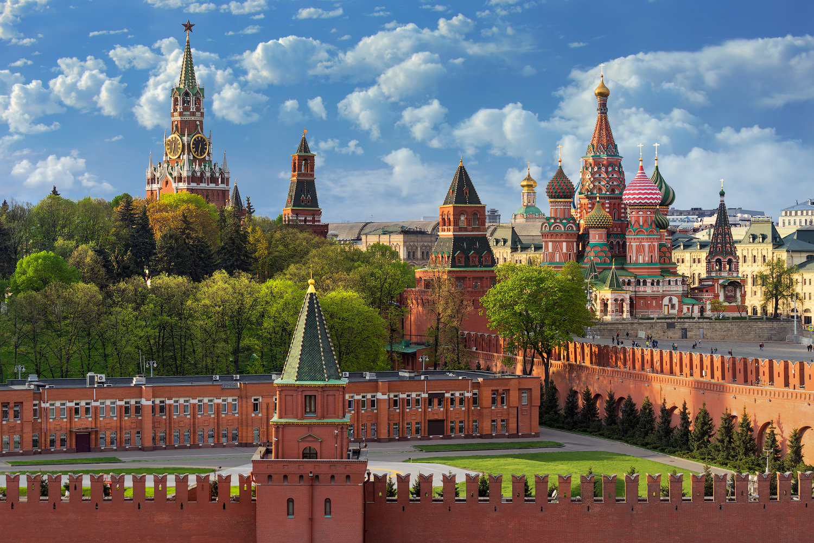

Крепость в центре Москвы и древнейшая её часть, главный общественно-политический и историко-художественный комплекс города, официальная резиденция президента Российской Федерации. Расположен на высоком левом берегу Москвы-реки — Боровицком холме, при впадении в неё реки Неглинной.
